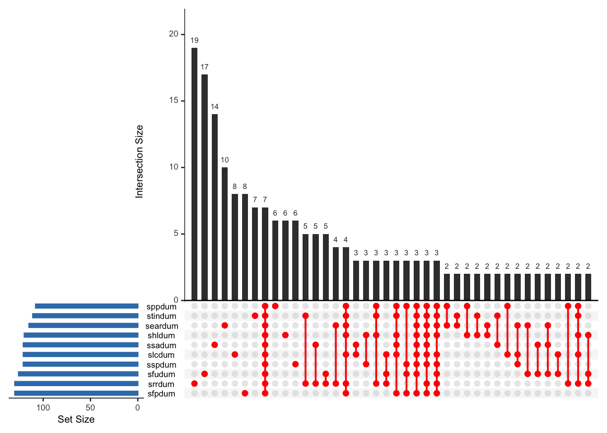

Code
data <- read.csv("/Volumes/anyan-1/upset.csv")#
#head(data) #first few rowsFrederick Anyan
June 24, 2023
Variables or columns are known as sets in upset visualization. Upset plots can be used to visualize the size, and distribution of sets, and the pairwise combinations of sets as well as overlaps or intersections of sets and their aggregates. This facilitates easy-to-understand communication of the size and proportion of set memberships.
Data with multiple variables or their combinations is often displayed in a Venn diagram. In some cases the Euler diagram is used. Both have limitations with increasing number of variables or sets. As precisely captured on the upset website, “The most common set visualization approach – Venn Diagrams – doesn’t scale beyond three or four sets. UpSet, in contrast, is well suited for the quantitative analysis of data with more than three sets”. Upset plots can be used to visualize the distributions of people for different variables or sets, their overlaps or intersections and their aggregates - for communicating the size and proportion of set memberships.
In this tutorial post, we will see how to use the upset() function in the ‘UpSetR’ package to visualize intersecting sets.
There are 281 columns or variables in the data file. The data comes from the Adolescent Stress Questionnaire scale which contains 10 sub-scales.
The sub-scales areSince all 10 sub-scales are already computed (i.e., sum scores), we will drop other columns or variables and retain only the 10 sub-scales needed.
Let’s inspect the names of the variables
[1] "asq_ssa_sum" "asq_srr_sum" "asq_spp_sum" "asq_stin_sum" "asq_sfu_sum"
[6] "asq_slc_sum" "asq_sear_sum" "asq_shl_sum" "asq_ssp_sum" "asq_sfp_sum" Now, let’s change the names of the variables to something simple
Let’s also get some descriptive statistics of the data
ssa srr spp stin
Min. : 2.000 Min. : 1.00 Min. : 7.00 Min. : 7.00
1st Qu.: 5.000 1st Qu.: 7.00 1st Qu.:13.00 1st Qu.:13.00
Median : 7.000 Median :11.00 Median :18.00 Median :17.00
Mean : 7.834 Mean :11.52 Mean :18.22 Mean :17.47
3rd Qu.:10.000 3rd Qu.:15.00 3rd Qu.:23.00 3rd Qu.:22.00
Max. :15.000 Max. :25.00 Max. :35.00 Max. :35.00
sfu slc sear shl
Min. : 2.000 Min. : 4.00 Min. : 1.000 Min. :10.00
1st Qu.: 6.000 1st Qu.:10.00 1st Qu.: 5.000 1st Qu.:20.00
Median : 8.000 Median :13.00 Median : 7.000 Median :26.00
Mean : 8.703 Mean :13.77 Mean : 7.609 Mean :26.96
3rd Qu.:11.000 3rd Qu.:17.00 3rd Qu.:10.000 3rd Qu.:34.00
Max. :15.000 Max. :25.00 Max. :15.000 Max. :50.00
ssp sfp
Min. : 7.00 Min. : 4.00
1st Qu.:16.00 1st Qu.: 8.00
Median :21.00 Median :11.00
Mean :21.09 Mean :11.23
3rd Qu.:26.00 3rd Qu.:14.00
Max. :35.00 Max. :20.00 From these summary descriptive statistics, we can make a decision as to what it means for a participant to be identified as meeting the criteria for ‘stressed’ versus ‘normal’. Let’s say we use the score on the third quartile of each variable as the cut-off point. The third quartile is also the 75th percentile so that the hgihest 25% of the data fall above it.
We will come back to this decision so don’t forget it - 😁
── Attaching core tidyverse packages ──────────────────────── tidyverse 2.0.0 ──
✔ dplyr 1.1.2 ✔ readr 2.1.4
✔ forcats 1.0.0 ✔ stringr 1.5.0
✔ ggplot2 3.4.2 ✔ tibble 3.2.1
✔ lubridate 1.9.2 ✔ tidyr 1.3.0
✔ purrr 1.0.1
── Conflicts ────────────────────────────────────────── tidyverse_conflicts() ──
✖ dplyr::filter() masks stats::filter()
✖ dplyr::lag() masks stats::lag()
ℹ Use the conflicted package (<http://conflicted.r-lib.org/>) to force all conflicts to become errorsRows: 529
Columns: 10
$ ssa <int> 8, 6, 11, 3, 9, 11, 8, 10, 6, 8, 7, 4, 4, 10, 4, 3, 12, 5, 7, 5, …
$ srr <int> 14, 6, 14, 6, 8, 17, 6, 19, 4, 5, 5, 5, 25, 9, 10, 13, 9, 5, 7, 9…
$ spp <int> 21, 17, 16, 9, 13, 14, 19, 17, 10, 10, 16, 16, 30, 12, 9, 10, 22,…
$ stin <int> 13, 15, 14, 9, 16, 21, 15, 14, 8, 9, 22, 8, 18, 17, 11, 20, 15, 1…
$ sfu <int> 6, 7, 11, 5, 10, 3, 6, 14, 4, 13, 9, 8, 11, 12, 5, 3, 9, 5, 11, 8…
$ slc <int> 14, 6, 18, 5, 14, 9, 19, 24, 6, 14, 21, 5, 15, 13, 7, 22, 10, 6, …
$ sear <int> 7, 7, 9, 6, 4, 5, 4, 4, 4, 4, 8, 4, 11, 10, 9, 11, 7, 9, 15, 3, 7…
$ shl <dbl> 30.0, 21.0, 20.0, 13.0, 35.0, 24.0, 37.0, 22.5, 16.0, 25.0, 28.0,…
$ ssp <dbl> 15, 21, 21, 12, 24, 21, 24, 32, 9, 15, 24, 15, 29, 22, 17, 27, 19…
$ sfp <dbl> 14.00000, 11.00000, 8.00000, 6.00000, 10.00000, 12.00000, 15.0000…Let’s convert all scores to integer class by looping over the columns (with lapply)
Rows: 529
Columns: 10
$ ssa <int> 8, 6, 11, 3, 9, 11, 8, 10, 6, 8, 7, 4, 4, 10, 4, 3, 12, 5, 7, 5, …
$ srr <int> 14, 6, 14, 6, 8, 17, 6, 19, 4, 5, 5, 5, 25, 9, 10, 13, 9, 5, 7, 9…
$ spp <int> 21, 17, 16, 9, 13, 14, 19, 17, 10, 10, 16, 16, 30, 12, 9, 10, 22,…
$ stin <int> 13, 15, 14, 9, 16, 21, 15, 14, 8, 9, 22, 8, 18, 17, 11, 20, 15, 1…
$ sfu <int> 6, 7, 11, 5, 10, 3, 6, 14, 4, 13, 9, 8, 11, 12, 5, 3, 9, 5, 11, 8…
$ slc <int> 14, 6, 18, 5, 14, 9, 19, 24, 6, 14, 21, 5, 15, 13, 7, 22, 10, 6, …
$ sear <int> 7, 7, 9, 6, 4, 5, 4, 4, 4, 4, 8, 4, 11, 10, 9, 11, 7, 9, 15, 3, 7…
$ shl <int> 30, 21, 20, 13, 35, 24, 37, 22, 16, 25, 28, 17, 27, 18, 29, 32, 3…
$ ssp <int> 15, 21, 21, 12, 24, 21, 24, 32, 9, 15, 24, 15, 29, 22, 17, 27, 19…
$ sfp <int> 14, 11, 8, 6, 10, 12, 15, 12, 5, 4, 13, 5, 13, 14, 7, 13, 13, 8, …Remember the decision to use the third quartile of each variable as the cut-off point? Let’s do that now.
Using the mutate() function in the ‘tidyverse’ package will create new dummy-coded variables with 1 indicating stressed and 0 indicating not stressed. To do this, the if_else argument will be supplied with the mutate() function. See explanation in the code.
data <- data %>% #create and object called data by taking data and then (or pipe)...
mutate(ssadum = if_else(ssa > 10,1,0))%>% #create a new variable called ssadum. If the score on the ssa variable is greater than 10 give ssadum 1, otherwise give ssadum 0
mutate(srrdum = if_else(srr > 15,1,0))%>%
mutate(sppdum = if_else(spp > 23,1,0))%>%
mutate (stindum = if_else(stin > 22,1,0))%>%
mutate(sfudum = if_else(sfu > 11,1,0))%>%
mutate(slcdum = if_else(slc > 17,1,0))%>%
mutate(seardum = if_else(sear > 10,1,0))%>%
mutate(shldum = if_else(shl > 34,1,0))%>%
mutate(sspdum = if_else(ssp > 26,1,0))%>%
mutate(sfpdum = if_else(sfp > 14,1,0))
#data$ssadum1 <- if_else(data$ssa > 10,1,0) This can also be used for creating new dummy variablesBy inspecting the number of columns, we see that there are now 20 variables.
We do not need all 20 variables, so let’s create a dataset for dummy-coded variables which contain information on stressed versus not stressed participants.
Let’s get the names of the variables
Now visualize the data using the upset() function.
upset(upsetdata, #Name of data file indicating participants meeting criteria versus not meeting criteria - 0, 1 - binary coded
nsets = 10, #Number of sets to visualize - usually the number of variables in the data file
matrix.color = "red",
sets.bar.color = "#377EB8",
order.by = "freq", #You can order sets by frequencies
empty.intersections = "on") #Keep this 'on' to see overlaps or intersections that are empty. 
The blue bar charts show the size of the set (i.e., set size).
The red circles corresponds to possible intersections or overlaps with the filled-in cells showing which set is part of an intersection or which variable overalps with which other variable(s). For example, srrdum and stindum form an intersection or overlap so does srrdum and ssadum. Additionally, srrdum, sfudum and slcdum form an intersection. And so on…
The black bar charts correspond to the size of possible intersections (i.e., intersection size). For example, srrdum and stindum form an intersection or overlap of size (5 people) so does srrdum and ssadum with a size of 5 people. However, srrdum, sfudum and slcdum for an intersection of size 3 people. And so on…